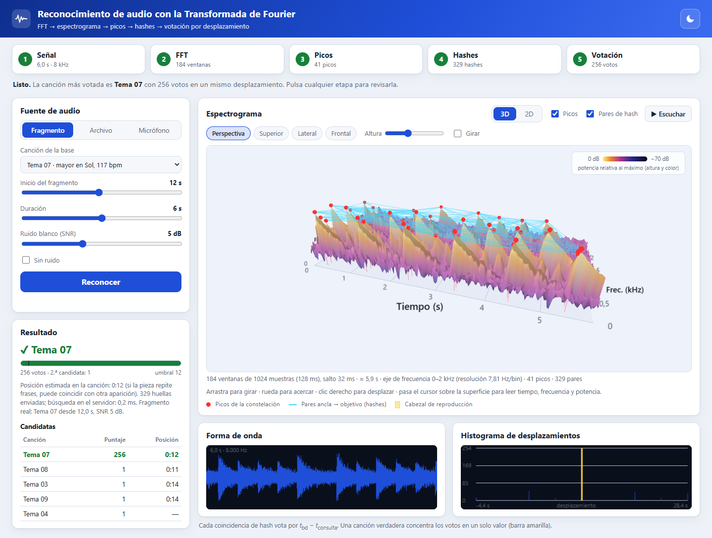

Resumen—Este trabajo investiga cómo se reconoce una canción a partir de un fragmento de audio mediante la Transformada de Fourier. Se presentan la transformada discreta (DFT), el algoritmo FFT de Cooley y Tukey, la ventana de Hann y el espectrograma, y sobre ellos un sistema de huella acústica basado en una «constelación» de picos: se detectan máximos locales del espectrograma, se combinan en pares para formar hashes de 24 bits y la canción se identifica por votación del desplazamiento temporal. El sistema se implementó como una aplicación web full stack (Node.js, Express y Web Audio API) con un espectrograma 3D interactivo, y se evaluó con una base de {{n_can}} canciones sintéticas de 30 s. Con fragmentos de 5 s, la canción correcta fue la primera candidata en {{acc_5_m5}} % de los casos con ruido blanco de −5 dB de relación señal-ruido y en {{acc_5_m10}} % con −10 dB; ninguna de {{fp_n}} consultas con canciones ajenas a la base superó el umbral de decisión. Para N = 4096, la FFT fue {{acel_4096}} veces más rápida que la DFT directa.
Palabras clave—Transformada de Fourier, FFT, espectrograma, huella acústica, reconocimiento de música, hashing, desarrollo web full stack.
Identificar una canción a partir de unos segundos de audio, grabados con un micrófono y en presencia de ruido, es el problema que resuelven servicios como Shazam [[cite:wang]]. La dificultad es doble: la señal no se puede comparar muestra a muestra con una grabación almacenada, porque el fragmento empieza en un instante arbitrario y está degradado; y la búsqueda debe ser rápida en bases de millones de piezas. La solución habitual consiste en extraer de la señal una huella acústica compacta y robusta [[cite:haitsma]], [[cite:cano]], y buscarla en un índice.
La Transformada de Fourier es la herramienta que permite pasar del dominio del tiempo al de la frecuencia, donde una nota musical se manifiesta como un conjunto de picos estables. Este informe responde a la actividad de investigar el funcionamiento del reconocimiento de audio (música) y el uso de la transformada de Fourier. Sus aportes son: (i) la presentación de los modelos matemáticos (DFT, FFT, ventanas, espectrograma, hashing y votación); (ii) una implementación en JavaScript con pruebas automáticas; (iii) una evaluación experimental de la velocidad de la FFT, la exactitud frente al ruido y los falsos positivos; y (iv) una demo web full stack con captura de audio, espectrograma interactivo y reconocimiento.
Una señal de audio continua $x(t)$ se representa por muestras $x[n]=x(n/f_s)$. Según el teorema del muestreo [[cite:shannon]], solo se pueden representar sin ambigüedad las frecuencias menores que $f_s/2$. Aquí se trabaja con $f_s={{fs}}$ Hz (banda de 0 a 4 kHz), suficiente para la melodía y los primeros armónicos y barata de procesar; cualquier audio de entrada se remuestrea a esa frecuencia.
Para un bloque de $N$ muestras, la DFT calcula la amplitud y fase de $N$ componentes sinusoidales [[cite:oppenheim]]:
[[eq:dft]]X[k]=\sum_{n=0}^{N-1}x[n]\,e^{-j2\pi kn/N},\qquad k=0,\dots,N-1.[[/eq]]El índice $k$ corresponde a la frecuencia $f_k=k\,f_s/N$, por lo que la resolución es $\Delta f=f_s/N$. Como $x[n]$ es real, $X[N-k]=X[k]^{*}$ y basta con los $N/2$ primeros coeficientes. Evaluar [[ref:dft]] directamente cuesta $\Theta(N^2)$ operaciones.
El algoritmo de Cooley y Tukey [[cite:cooley]] separa las muestras pares e impares. Si $E[k]$ y $O[k]$ son las DFT de tamaño $N/2$ de cada grupo y $W_N=e^{-j2\pi/N}$, entonces
[[eq:fft]]\begin{aligned}X[k]&=E[k]+W_N^{k}\,O[k],\\ X[k+N/2]&=E[k]-W_N^{k}\,O[k],\end{aligned}\quad 0\le kPara analizar música, cuyo contenido cambia en el tiempo, se divide la señal en bloques solapados, cada uno multiplicado por una ventana que atenúa los bordes y reduce la fuga espectral [[cite:harris]]. Se usa la ventana de Hann y la transformada de tiempo corto (STFT) con salto de $H$ muestras:
[[eq:stft]]\begin{aligned}w[n]&=\tfrac12-\tfrac12\cos\tfrac{2\pi n}{N},\quad 0\le nEn la escala temperada, la nota MIDI $n$ tiene frecuencia fundamental $f_0=440\cdot2^{(n-69)/12}$ Hz. Un instrumento produce además armónicos, de modo que una nota es una suma $x(t)=\sum_{h}a_h\sin(2\pi h f_0 t)$, que en el espectrograma aparece como líneas horizontales en $f_0,2f_0,3f_0,\dots$ que duran lo que la nota. Esas líneas son las estructuras que la huella aprovecha.
El método sigue el enfoque de constelación de picos de Wang [[cite:wang]]. La Fig. 1 resume la tubería: la señal se convierte en espectrograma; de él se extraen picos; los picos se combinan en pares que producen hashes; y la canción se determina contando coincidencias consistentes en el índice.
Un punto $(m,k)$ del espectrograma es un pico si es el máximo de su vecindad de $\pm\Delta_t$ ventanas y $\pm\Delta_f$ bins y, además, está a menos de $\gamma$ dB del máximo global $S_{\max}$:
[[eq:pico]]\begin{aligned}(m,k)\ \text{es pico}\iff{}&S[m,k]=\max_{|m'-m|\le\Delta_t,\,|k'-k|\le\Delta_f}S[m',k']\\ &\wedge\ S[m,k]>S_{\max}-\gamma.\end{aligned}[[/eq]]El criterio de máximo local reparte los picos de manera uniforme en el plano tiempo-frecuencia y es insensible a la ganancia global, pues compara dB entre sí. El margen $\gamma$ descarta lo que queda por debajo del ruido (Sección V-E). La Fig. 2 muestra el resultado sobre {{seg_ej}} s de una canción de la base: {{picos_ej}} picos ({{picos_s}} por segundo).
Un solo pico no es suficientemente selectivo. Por eso cada pico ancla se une con los siguientes $F={{fan}}$ picos de una zona objetivo (hasta ${{dtmax}}$ ventanas después, Fig. 3) y cada par define un hash de 24 bits con las frecuencias de ambos picos y su separación en el tiempo:
[[eq:hash]]h=(k_1\cdot512+k_2)\cdot64+\Delta m,\qquad \Delta m=m_2-m_1\in[1,63].[[/eq]]Ese hash no depende del instante absoluto del par, solo de la diferencia $\Delta m$, y por eso sirve para fragmentos que empiezan en cualquier punto. La fuente de selectividad es combinatoria: dos frecuencias (9 bits cada una) y un intervalo (6 bits) aportan 24 bits frente a los 9 de un pico aislado.
Durante el registro, cada hash de cada canción se guarda con su identificador y su instante $m_{\mathrm{bd}}$. En la consulta, cada hash $(h,m_{\mathrm q})$ recupera las entradas con el mismo $h$ y vota por el desplazamiento $\delta=m_{\mathrm{bd}}-m_{\mathrm q}$. Si el fragmento pertenece a la canción, muchos pares coinciden con el mismo $\delta$ (la posición del fragmento); las coincidencias fortuitas se reparten entre desplazamientos distintos:
[[eq:voto]]\mathrm{puntaje}_s=\max_{\delta}\,[c_s(\delta-1)+c_s(\delta)+c_s(\delta+1)],[[/eq]]donde $c_s(\delta)$ es el número de coincidencias de la canción $s$ con desplazamiento $\delta$. Se suman tres bins consecutivos porque el fragmento empieza en una muestra arbitraria y los instantes se cuantizan en pasos de {{hop_ms}} ms, lo que desplaza algunos picos una ventana. La canción ganadora es $\hat s=\arg\max_s\mathrm{puntaje}_s$ y se acepta solo si el puntaje alcanza un umbral $\tau={{umbral}}$; además, $\delta H/f_s$ estima la posición del fragmento en la canción.
Para evaluar la robustez se añade ruido blanco gaussiano de varianza $\sigma^2$ fijada por la relación señal-ruido respecto a la potencia $P_x$ del fragmento:
[[eq:snr]]\mathrm{SNR_{dB}}=10\log_{10}\frac{P_x}{\sigma^{2}}\ \Rightarrow\ \sigma^{2}=\frac{P_x}{10^{\mathrm{SNR_{dB}}/10}}.[[/eq]]Si los $U$ hashes distintos del índice estuvieran repartidos uniformemente en $2^{24}$ valores, un hash cualquiera coincidiría por azar con probabilidad $p\approx U/2^{24}$. En música real y en tonos sintéticos la distribución no es uniforme, porque las notas ocupan pocas frecuencias y los ritmos pocos intervalos. En la Sección V-D se mide ese efecto.
Como en los servicios comerciales, el cálculo costoso se hace en el cliente y el servidor solo busca. El frontend (HTML, CSS y JavaScript) obtiene el audio de tres fuentes: un fragmento de la base con ruido ajustable, un archivo del usuario o el micrófono, y lo decodifica y remuestrea a 8 kHz con la Web Audio API [[cite:webaudio]]. Luego calcula el espectrograma, los picos y los hashes con el módulo huella.js y dibuja el espectrograma en 3D con Three.js [[cite:threejs]] (superficie con la potencia como altura y color, picos, pares de hash y cabezal de reproducción) y en 2D sobre un canvas. El backend es una API REST en Node.js y Express [[cite:express]] que, al iniciar, lee las canciones, calcula sus huellas y construye el índice en memoria; recibe los hashes, valida las entradas (enteros de 24 bits, límite de tamaño) y responde con los candidatos, la posición estimada y el histograma de votos. El mismo módulo huella.js corre en Node y en el navegador, de modo que cliente y servidor calculan huellas idénticas.
La API expone GET /api/canciones, GET /api/estado y POST /api/reconocer, que recibe {"huellas": [[hash, tiempo], …]}. La Tabla I resume los parámetros de la huella.
| Parámetro | Valor |
|---|---|
| Frecuencia de muestreo fs | {{fs}} Hz |
| Ventana / FFT (N), salto (H) | {{N}} / {{hop}} muestras |
| Vecindad de pico (Δt, Δf) | ±{{vect}} ventanas, ±{{vecf}} bins |
| Margen bajo el máximo global (γ) | {{marg}} dB |
| Pares por ancla (F), Δm máximo | {{fan}}, {{dtmax}} ventanas |
| Umbral de decisión (τ) | {{umbral}} votos |
Para no usar material con derechos de autor, la base contiene {{n_can}} piezas sintéticas de 30 s generadas por código con semillas fijas: una melodía en una escala (mayor, menor, pentatónica o dórica) con estructura de frases repetidas A–B–A–C, un arpegio y un bajo, cada nota con cuatro armónicos y envolvente de ataque y decaimiento. Cada pieza tiene tonalidad, tempo (80–139 bpm), timbre y afinación (±50 centésimas) propios; esta última variación se añadió porque, sin ella, piezas distintas compartían frecuencias exactas y generaban coincidencias fortuitas poco realistas.
El módulo se verificó con 13 pruebas automáticas (node:test): la FFT coincide con la DFT directa; una senoidal en el bin $k$ produce picos en $k$ y $N-k$; se cumple el teorema de Parseval; la ventana de Hann toma los valores esperados; el pico del espectrograma de una nota de 440 Hz cae en el bin correcto; los hashes caben en 24 bits; se reconocen fragmentos ruidosos de 5 s; una canción ajena no supera el umbral; y la posición estimada de un fragmento en una pieza sin repeticiones tiene error menor que 0,1 s. Todas pasan.
La Tabla II y la Fig. 4 comparan el tiempo de una transformada de $N$ puntos con la FFT implementada y con la DFT directa (ambas en Node.js, entrada compleja aleatoria). El error máximo entre las dos es menor que {{err_fft}}, es decir, del orden del redondeo de doble precisión. La ventaja de la FFT crece con $N$, como predice $N/\log_2 N$, y llega a {{acel_4096}}× para $N=4096$. Con la ventana usada ($N={{N}}$), una FFT toma unas decenas de microsegundos.
La Fig. 5 muestra el histograma de votos para un fragmento de 5 s del Tema {{hist_id}} con ruido de 5 dB. La canción correcta acumula {{hist_puntaje}} votos en un único desplazamiento (el instante real del fragmento), mientras que la mejor canción rival no pasa de {{hist_rival}}. Los picos menores de la canción correcta corresponden a otras apariciones de la misma frase musical, que se repite exactamente en la pieza; por eso, en piezas con repeticiones, la posición estimada es ambigua.
Se evaluó el sistema con {{n_can}} canciones, 5 fragmentos aleatorios por canción y condición (60 consultas por celda), con duraciones de 2 a 10 s y SNR entre ∞ (sin ruido) y −15 dB. La Tabla III muestra, para cada condición, el porcentaje en que la canción correcta fue la primera candidata (top-1) y el porcentaje en que, además, se superó el umbral; la Fig. 6 grafica el top-1. Con 5 s o más se alcanza 100 % de top-1 hasta −5 dB; con 5 s, el top-1 baja a {{acc_5_m10}} % con −10 dB y a {{acc_5_m15}} % con −15 dB, y con 10 s a {{acc_10_m10}} % y {{acc_10_m15}} %. Los fragmentos de 2 s se identifican ({{acc_2_inf}} % sin ruido) pero su puntaje es bajo, de modo que solo {{ace_2_inf}} % supera el umbral; con 3 s ya lo supera {{ace_3_inf}} %. El puntaje mediano sin ruido es de {{pm_5_inf}} votos para 5 s y {{pm_10_inf}} para 10 s: crece con la duración, pues hay más pares.
Se consultó la base con fragmentos de {{n_can}} canciones no incluidas, en seis condiciones (Tabla IV). De {{fp_n}} consultas hubo {{fp_tot}} falsos positivos; el puntaje máximo de una canción ajena fue {{fp_max}} votos, por debajo del umbral $\tau={{umbral}}$ (que se fijó en el doble de ese máximo). Aun así, {{azar_pct}} % de los hashes de una canción ajena existen en el índice, {{ratio_azar}} veces más que el {{ocup_pct}} % que daría una distribución uniforme, lo que confirma la no uniformidad descrita en la Sección III: la decisión no se puede basar en que «haya coincidencias», sino en que se concentren en un desplazamiento.
El parámetro $\gamma$ resultó decisivo (Tabla V). Con márgenes grandes ({{marg_alto}} dB) se conservan muchos picos débiles, que el ruido reemplaza o desplaza, y el top-1 a −5 dB baja a {{top_alto}} %, además de aumentar el puntaje de canciones ajenas a {{ajeno_alto}}. Con márgenes pequeños, la constelación contiene solo los picos más fuertes, que sobreviven al ruido y producen menos hashes ({{hps}} por segundo con $\gamma={{marg}}$ dB). La elección se hizo con canciones sintéticas, cuyas notas tienen una amplitud parecida; música real, con gran dinámica, requeriría un umbral adaptativo por zonas en lugar de uno global.
Calcular la huella de un fragmento de 5 s toma unos {{huella_ms}} ms en el cliente y la búsqueda en el servidor {{busq_ms}} ms, con {{huellas_tot}} huellas ({{huellas_uni}} hashes distintos) de {{n_can}} canciones; construir el índice al iniciar el servidor tarda {{const_ms}} ms. La búsqueda recorre solo las listas de los hashes de la consulta, por lo que crece con el número de consultas y la longitud media de las listas ({{entradas_hit}} entradas por hash coincidente aquí), no con el número de canciones. La Fig. 7 muestra la interfaz: las cinco etapas del algoritmo se animan durante el reconocimiento y pueden consultarse una a una, el espectrograma 3D se puede girar y acercar, y hay modo claro y oscuro.
La Transformada de Fourier convierte un fragmento de audio en un espectrograma donde las notas son estructuras estables, y a partir de ahí se puede construir una huella robusta: picos locales, pares de picos, hashes e histograma de desplazamientos. La FFT hace práctico el cálculo, con una aceleración de {{acel_4096}} veces sobre la DFT directa para $N=4096$. En las pruebas, fragmentos de 5 s se identificaron en {{acc_5_m5}} % de los casos con ruido de −5 dB y ninguna canción ajena fue aceptada. La demo full stack integra todo el proceso, con el cálculo pesado en el navegador y la búsqueda en el servidor.
Como trabajo futuro se propone evaluar con música real y con grabaciones de micrófono, incorporar un umbral de picos adaptativo, estudiar la invariancia a cambios de tempo y tono, y almacenar el índice en una base de datos persistente.
